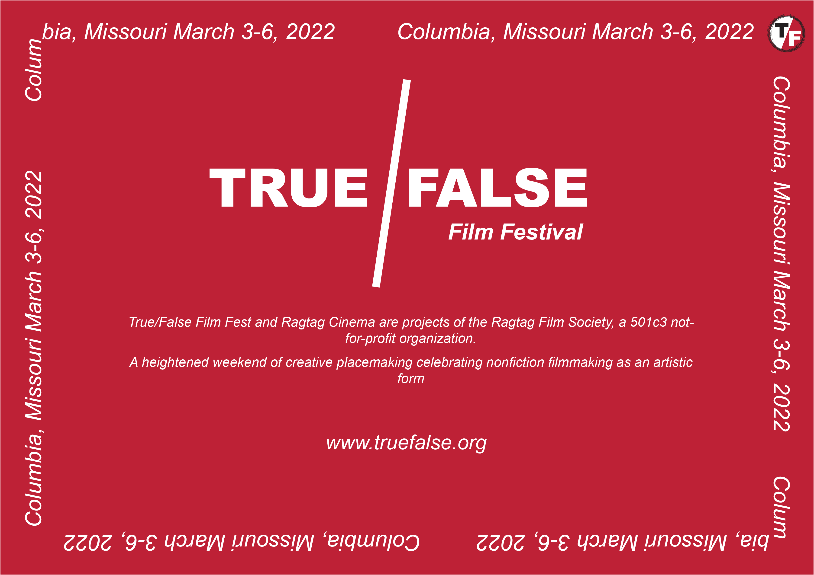
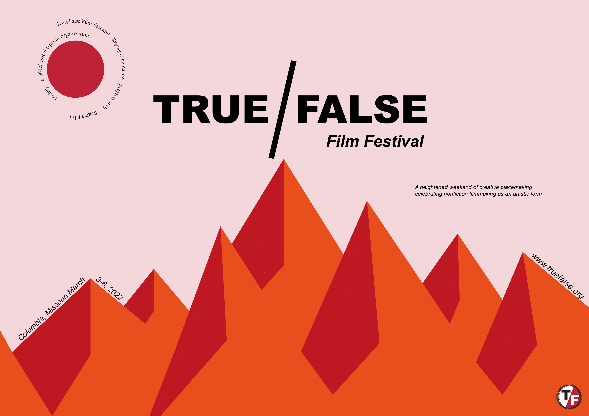
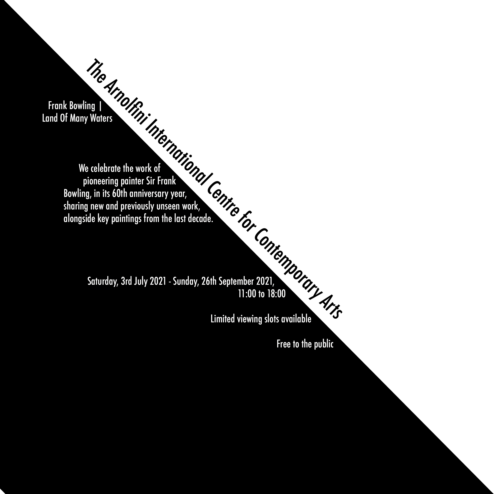
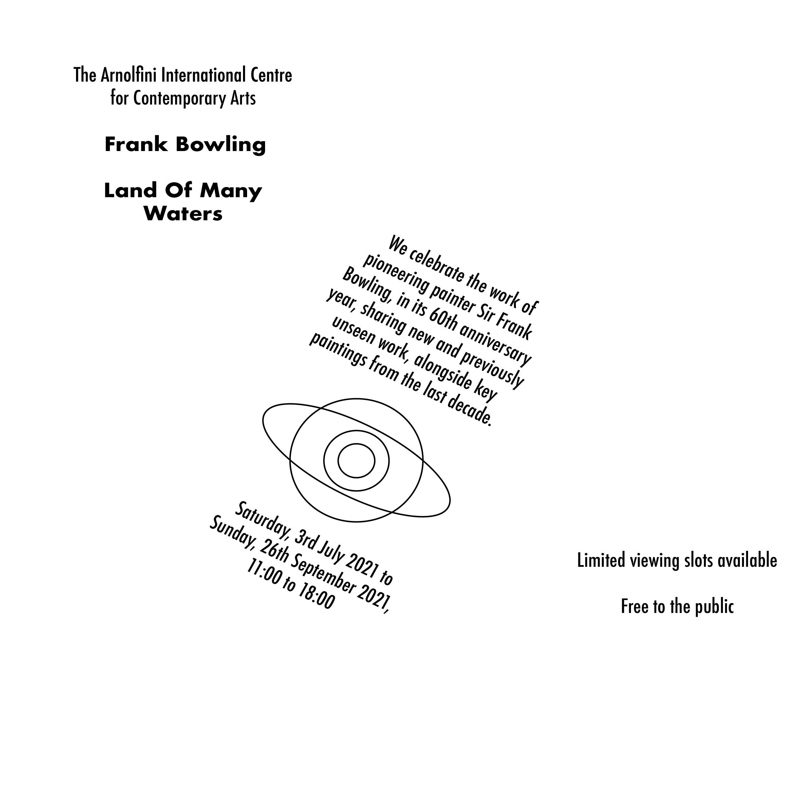
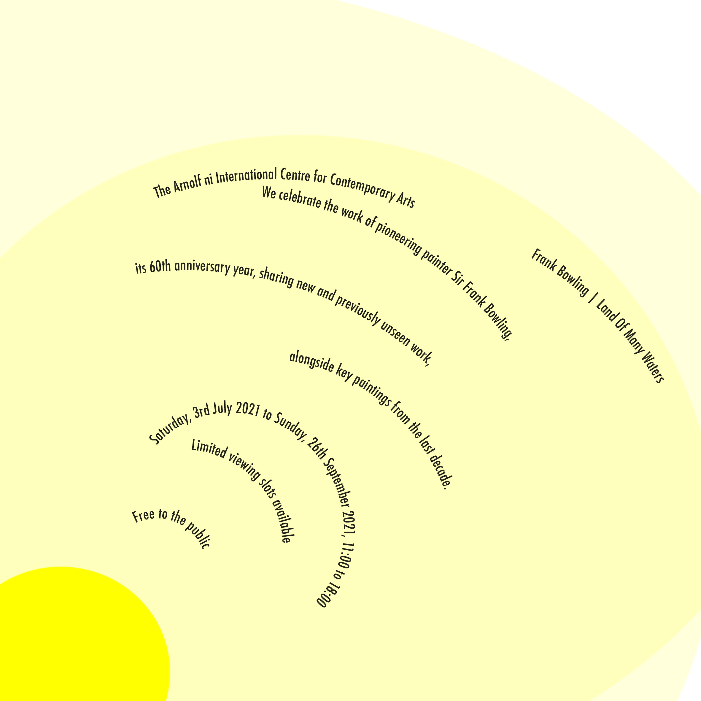
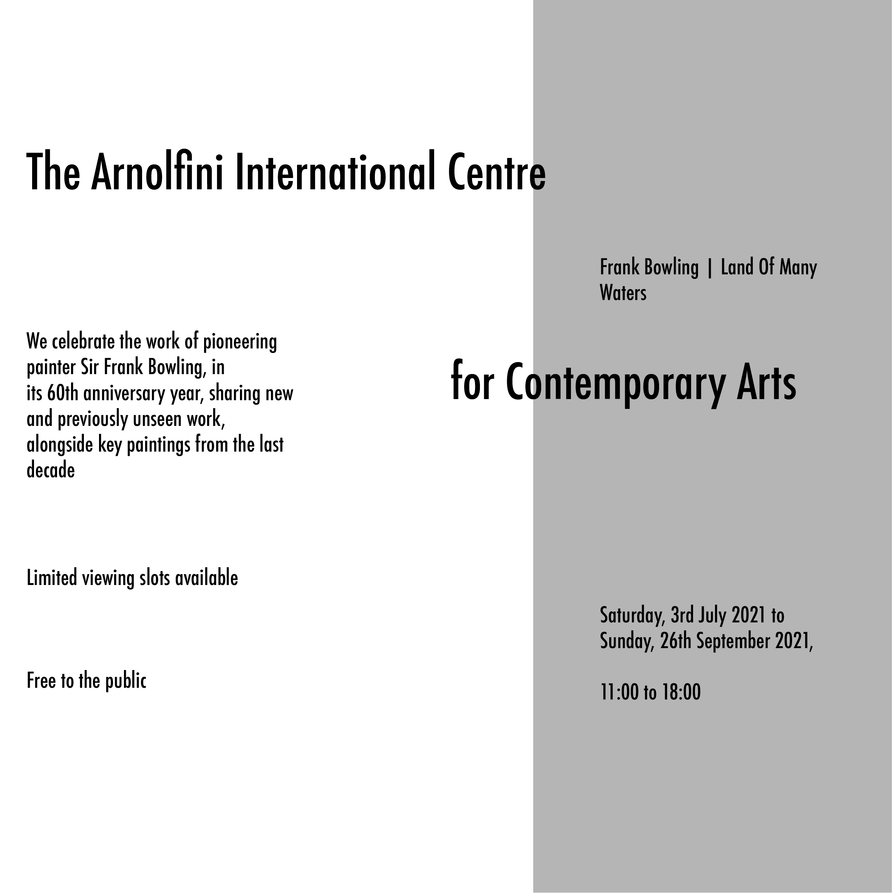
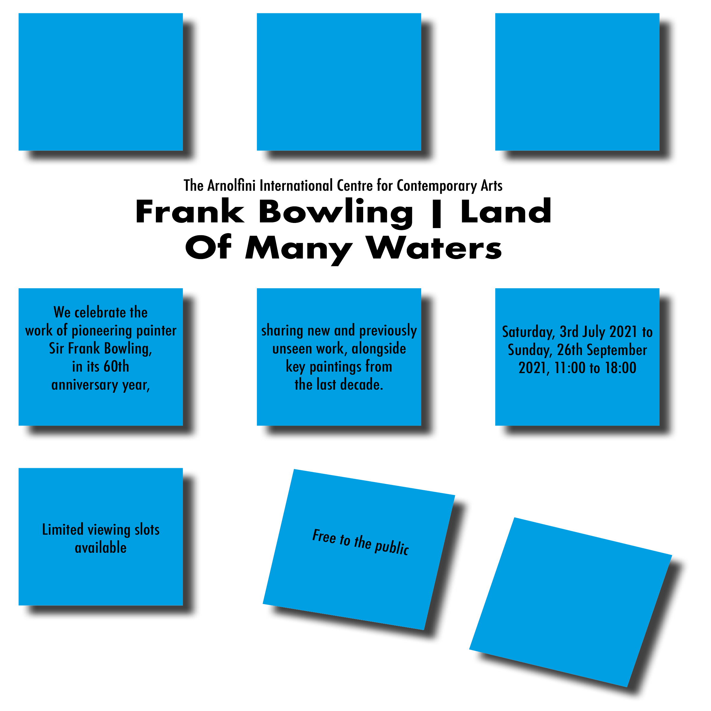
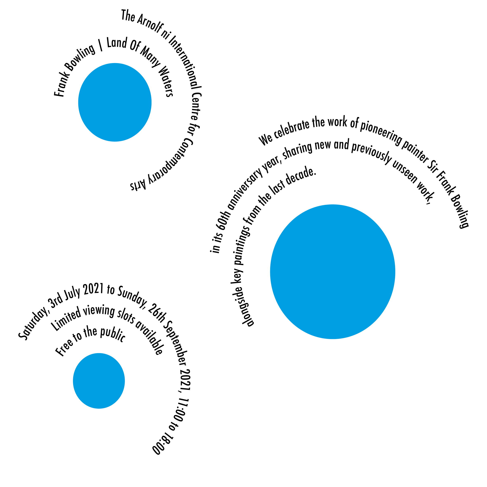
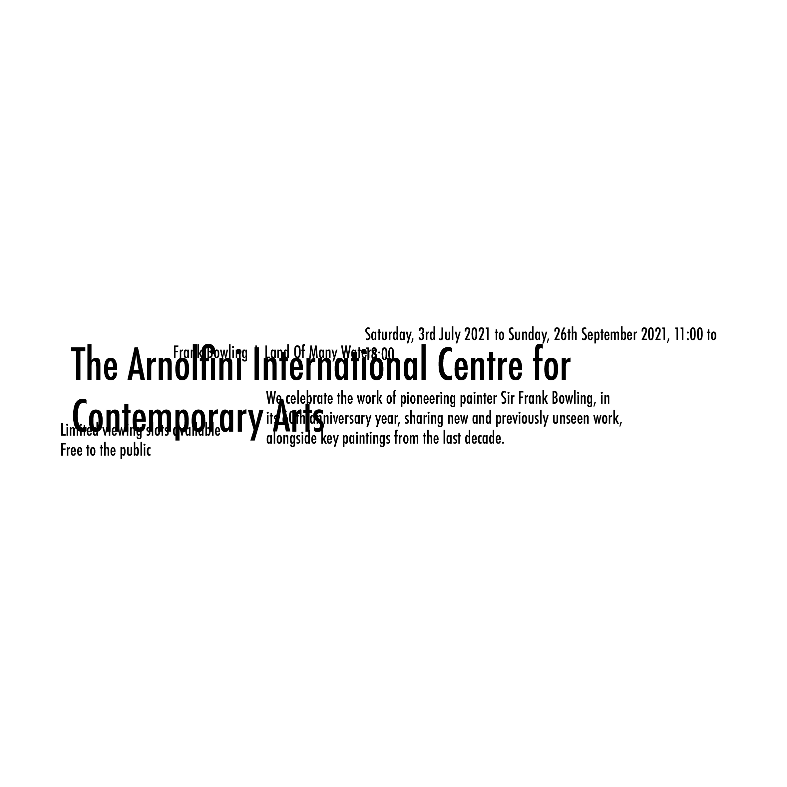
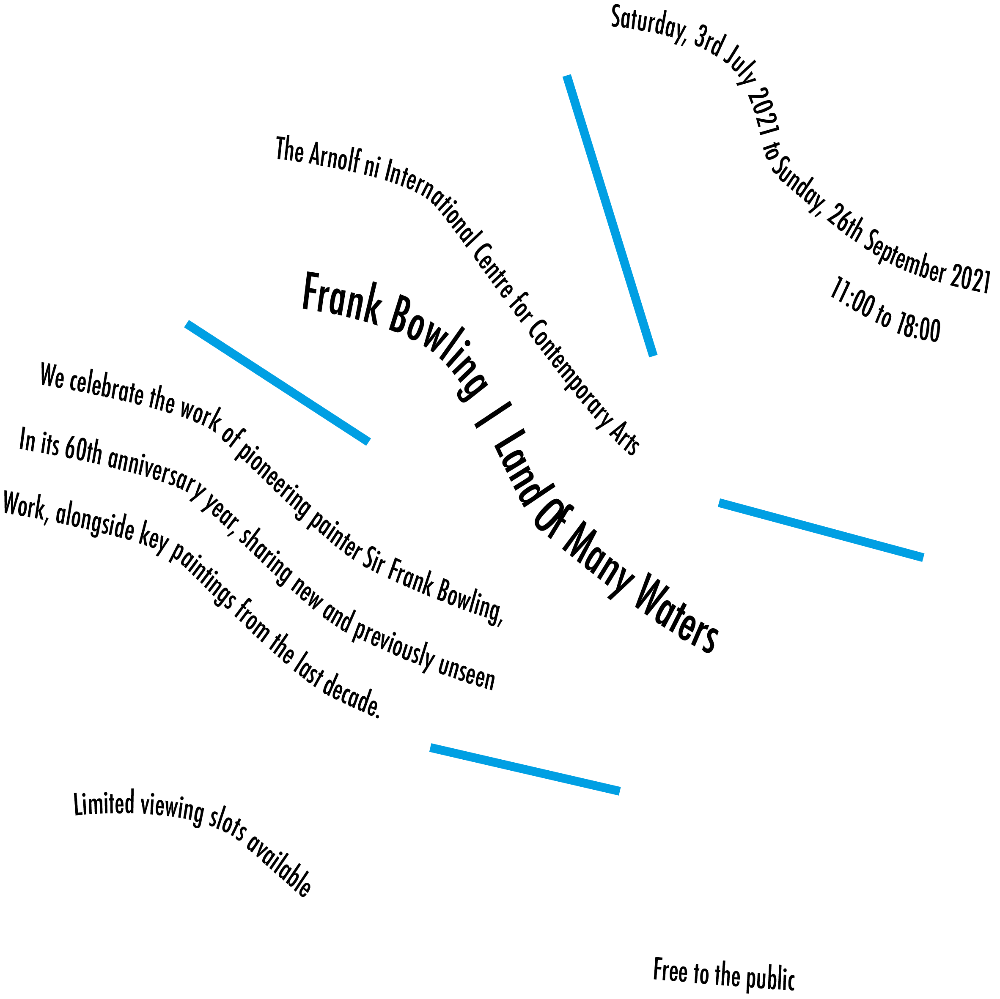

Below you will find all of my assignment work, at the top is a navigation bar that you can use to get to where you need to be quick and easy.
Carp task Below

This is my first design for the True/False film fest poster, this is a clean and simple design that is easy to read. It uses bold fonts to grab the viewer and uses the same red as the one used on both their logo and their website. I also included their social media accounts below, this way if the viewer wishes to, they can find out more information about the event or even follow the event online.

This is my second attempt at a poster. This time, I orientated this one landscape, I believe this allowed me to spread everything else out more horizontally. The background colour is the same colour as used in the logo. I also wrapped the date around the page repeating it as it went around. I feel as if this fits well with the design, almost acting as a margin to the page. Instead of using a normal forward-slash, I drew my own one as this fits the page a lot better.

This poster was my final and favourite design. Like poster number 2, I stuck with landscape as I believe it gives me a lot more freedom to make an exciting poster. Firstly, I used Adobe Illustrator to create the mountain range you can see in the poster using the pen tool, I then used this as the background. Like the 2nd poster, I used the same font and layout for the main title. I wrapped some of the text around what is the sun in the poster and some next to the title, aswell as placing the date and website on the mountains.
Coding Task Below
Since the second week of the semester, we have been slowly expanding our knowledge on both HTML and CSS by working through a set of worksheets. Below I will link the webpages for the work we completed.
Click here for week 1 work
Click here for week 2 to 4 work
Click here for week 5 work and here for the button work
Typography Task Below
We were challenged to create 8 different photos for each type of typographical system using illustrator. Each system has its own seperate poster showing the differences between them, making these also helped create my Carp posters.







